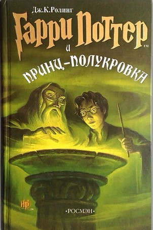

Гарри Поттер и принц полукровка

Министерство магии терпит поражение за поражением в битвах с Волан-де-Мортом. Даже маглы страдают от второй войны - каждый день происходят катастрофы, причины которых никому не ведомы.
Но и на войне жизнь продолжается. Гарри, Рон и Гермиона, как и все шестнадцатилетние, учатся, ходят на вечеринки и влюбляются. Однако опасность все ближе. Несмотря на все усилия Дамблдора по защите школы, в Хогвартсе происходят очень странные события.
Омут памяти на этот раз откроет Гарри самую большую тайну Темного Лорда, и ради того, чтобы победить, Гарри вынужден пожертвовать самым дорогим... Какую сторону в этой войне примет загадочный Принц-полукровка?